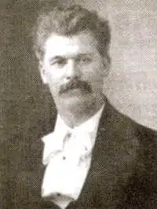
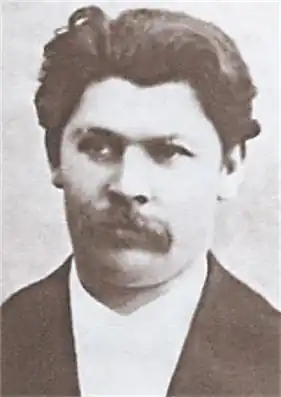

Сьогодні мало кому відоме ім'я цього політика, літератора, науковця і громадського діяча. А тим часом Стешенко був одним з найбільш знакових політичних достойників лівого руху, які органічно суміщали у своїй діяльності принципи українськості, соціальної справедливості та моральності.
Іван Стешенко народився 24 червня 1873 року у Полтаві. Він навчався у Полтавській гімназії та на історико-філологічному факультеті Київського університету, згодом викладав у Фундуклеївській гімназії, Фребелівському інституті, Музично-драматичній школі Миколи Лисенка та на Вищих жіночих курсах.
Гімназистом Стешенко почав писати вірші – спочатку російською, а потім українською мовами, пізніше написав поему "Мазепа" і видав збірки поезій "Хуторні сонети" та "Степові мотиви". Він вільно володів іспанською, французькою, німецькою, італійською та кількома слов’янськими мовами і перекладав Овідія, Байрона, Беранже, Шіллера, Пушкіна. Стешенко також досліджував творчість Котляревського, Коцюбинського, Старицького, Мирного, Стефаника і Шевченка, редагував часопис "Шершень" та журнали "Ґедзь" і "Сяйво", разом з дружиною Оксаною уклав і видав українсько-російський словник. Його літературні псевдоніми – Іван Сердешний, Ів. Січовик, Світленко. Він входив до гуртка "Плеяда" і Літературно-артистичного товариства, був секретарем і заступником голови Українського наукового товариства, обраний дійсним членом НТШ – прообразу української академії наук – з 1917 року. Студентом Стешенко захопився ідеями Маркса та Драгоманова і став співзасновником групи "Українська соціал-демократія", до якої входили, зокрема, Михайло Коцюбинський та Леся Українка. Він належав також до Київської старої громади, Революційної української партії, Української демократичної партії та Української соціал-демократичної робітничої партії. 1897 року Стешенко був заарештований за політичну діяльність і після п’яти місяців ув’язнення висланий з Києва. У березні 1917 року Стешенко став співзасновником Центральної Рад, керівником шкільної і редакційної комісій Ради та членом її президії, а у червні він був призначений генеральним секретарем (тобто, міністром) освіти і на цій посаді проводив українізацію школи. Після відставки кабінету Володимира Винниченка працював головним інструктором Міністерства освіти. Разом із тим упродовж 1917-18 років Стешенко був співредактором "Робочої Газети". 29 серпня 1918 року Іван Стешенко був у Полтаві важко поранений більшовиками і наступного дня помер.